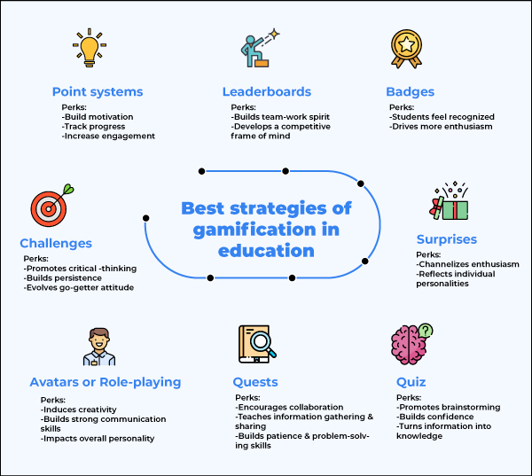
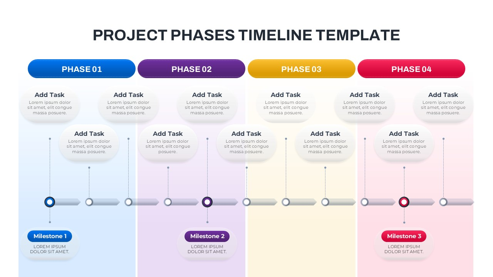
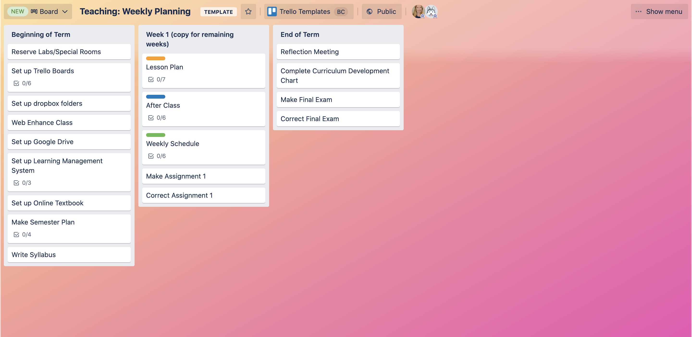

Organiza, implementa y evalúa experiencias gamificadas sostenibles, medibles e impactantes. De la idea al aula, con metodología y herramientas digitales de vanguardia.

¿Cómo organizo todas las fases de un proyecto gamificado para asegurar su viabilidad, impacto educativo e implementación real en el aula?
Dos clases de 60 minutos cada una, con teoría fundamentada, herramientas reales y práctica colaborativa.
Aplicar las 5 fases metodológicas desde la planificación estratégica hasta la evaluación del impacto.
Comparar Trello, Notion, Asana, Monday, Miro y ClickUp según el tipo de proyecto y contexto educativo.
Utilizar herramientas de analítica del aprendizaje que recopilan datos en tiempo real de forma invisible.
Aplicar rúbricas, portfolios digitales y métricas de engagement para medir el aprendizaje real.
Coordinar proyectos gamificados colaborativos usando tableros Kanban y herramientas de trabajo en equipo.
Justificar cada decisión de diseño con evidencia científica de la neurodidáctica y la tecnología educativa.
Todo proyecto gamificado exitoso sigue un ciclo metodológico riguroso. Cada fase es imprescindible: saltarse una es comprometer el resultado final.
La gamificación sin metodología es solo entretenimiento. Con metodología, es aprendizaje transformador. Las 5 fases que verás a continuación no son una receta, sino un marco adaptable que garantiza coherencia entre los objetivos de aprendizaje, los mecanismos de juego y la evaluación del impacto.
Según Werbach y Hunter (2012), los proyectos gamificados que siguen un proceso estructurado obtienen un 89% más de engagement y un 40% más de retención que los diseñados de forma intuitiva.

El diseño gamificado no comienza con la tecnología ni con los juegos. Comienza con una pregunta fundamental: ¿qué quiero que mis estudiantes sean capaces de hacer que ahora no pueden?— Werbach & Hunter, For the Win (2012)
No todas las plataformas son iguales. La elección depende del tipo de proyecto, el nivel de complejidad y las preferencias del equipo docente.
Trello es la herramienta más adoptada en educación por su curva de aprendizaje mínima y su potencia visual. Un tablero bien configurado permite gestionar simultáneamente el diseño del proyecto, el seguimiento del alumnado y la evaluación desde un único espacio.
La clave está en adaptar las columnas del Kanban a las fases del proyecto gamificado: Planificación → Diseño → Desarrollo → Implementación → Evaluación. Cada tarjeta representa una tarea, con responsable, fecha límite y checklist interno.
🔗 Ver plantillas educativas de Trello
5 preguntas para consolidar lo aprendido sobre planificación y gestión de proyectos gamificados
El gran reto de la gamificación: ¿cómo saber si el alumnado aprende sin romper la magia del juego? La respuesta está en la analítica invisible del aprendizaje.

La analítica del aprendizaje (Learning Analytics) permite al docente tomar decisiones basadas en datos sin interrumpir la experiencia gamificada. Según Siemens y Long (2011), los sistemas que integran analítica en tiempo real mejoran la personalización del aprendizaje en un 60%.
El secreto está en diseñar los mecanismos de seguimiento dentro de la narrativa: los puntos de experiencia son datos de progreso, las misiones completadas son evidencias de competencia, y los badges son indicadores de logro verificables.
La evaluación en un proyecto gamificado no es un examen al final: es un proceso continuo, integrado en la narrativa y visible para el estudiante en todo momento.
La evaluación gamificada no mide lo que el estudiante sabe en un momento puntual. Mide quién se ha convertido a lo largo del proceso de aprendizaje.— Adaptado de Wiggins & McTighe, Understanding by Design (2005)
20 minutos · Trabajo en equipo · Herramienta: Trello, Notion o Miro
Crear el tablero de gestión de vuestro propio proyecto gamificado, aplicando las 5 fases y al menos una herramienta de seguimiento del alumnado.
Usa esta lista para verificar que tu proyecto cumple con todos los criterios de calidad pedagógica y técnica. Haz clic en cada ítem para marcarlo.
Un proyecto gamificado bien gestionado no es solo una experiencia de aprendizaje más atractiva. Es la demostración de que el aprendizaje puede ser tan absorbente, tan retador y tan significativo como el mejor videojuego que hayas jugado.